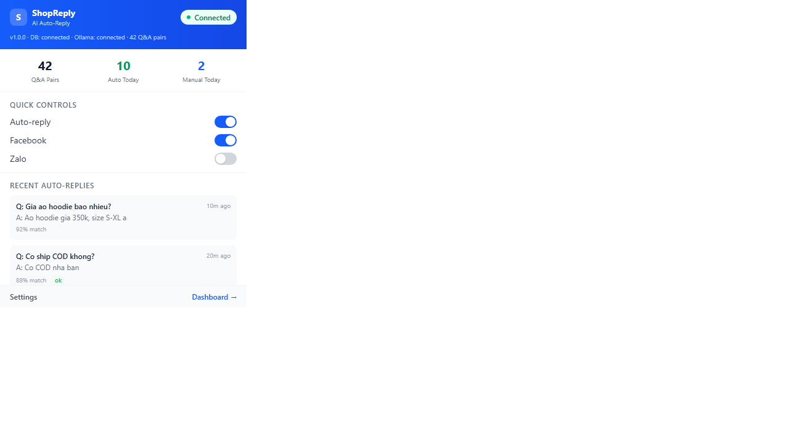
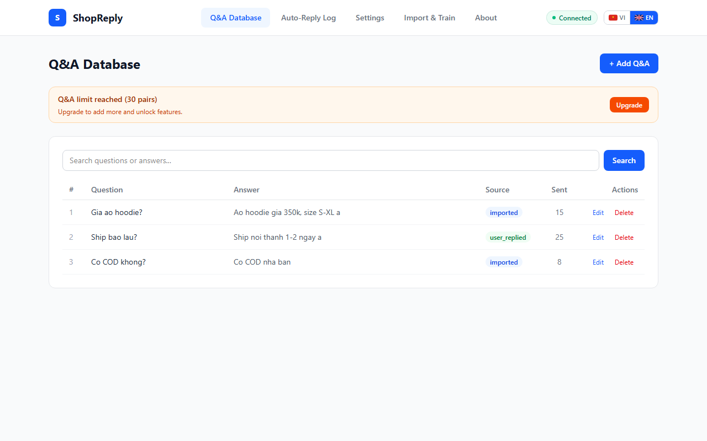
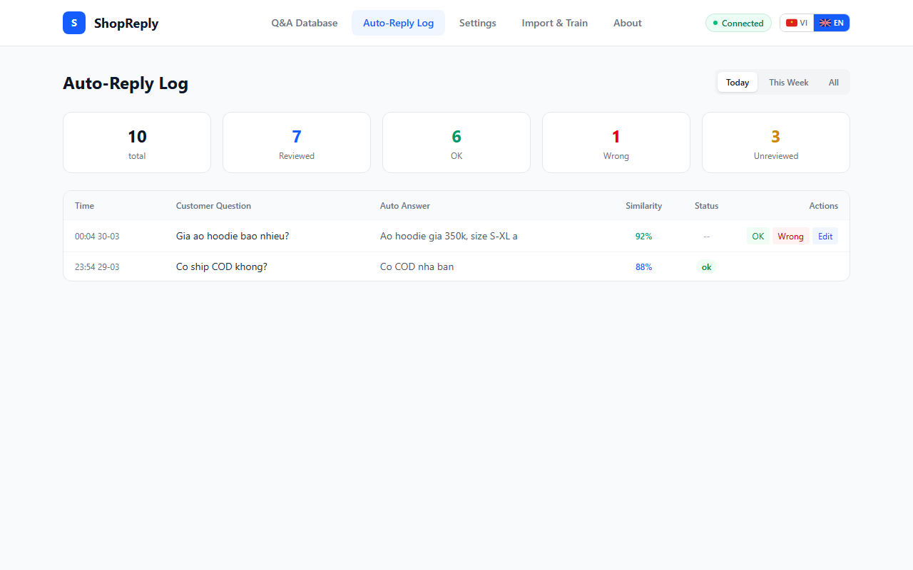
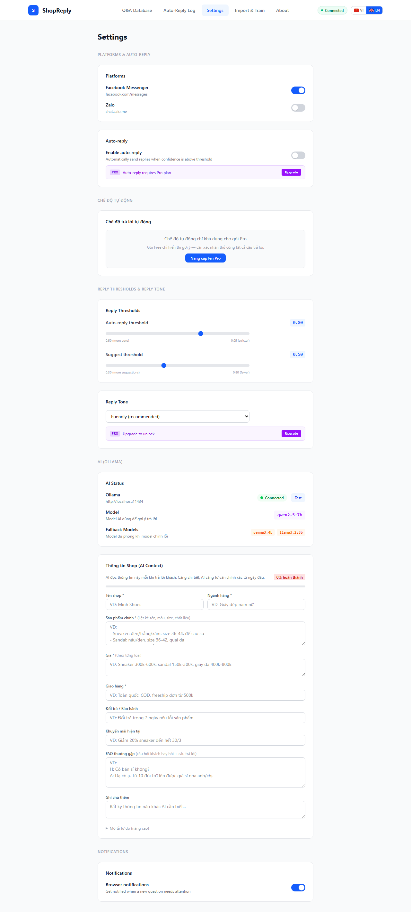

Hướng dẫn cài đặt ShopReply
Phần mềm tự động trả lời tin nhắn cho shop bán hàng trên Facebook & Zalo.
Mọi dữ liệu đều được xử lý trên máy của bạn — không gì bị gửi lên cloud.
Yêu cầu hệ thống
| Hạng mục | Yêu cầu tối thiểu |
|---|---|
| Hệ điều hành | Windows 10 trở lên (64-bit) |
| RAM | 8 GB (khuyến nghị 16 GB nếu dùng AI gợi ý) |
| Ổ cứng | ~2 GB trống (cho backend + model embedding) |
| Trình duyệt | Google Chrome phiên bản 120+ |
| Mạng | Không cần internet để trả lời tự động. Cần internet để cài Chrome Extension |
Tùy chọn: Cài Ollama (để có AI gợi ý)
Nếu bạn muốn ShopReply gợi ý câu trả lời bằng AI cho những câu hỏi mới:
- Tải Ollama tại: ollama.com/download
- Cài đặt bình thường (Next > Next > Install)
- Mở Command Prompt, chạy:
ollama pull qwen2.5:7b - Đợi tải xong (khoảng 4-5 GB)
Cài Backend (1 lần duy nhất)
- Download file
ShopReply-Backend.exe - Tạo 1 thư mục riêng, ví dụ:
C:\ShopReply\ - Bỏ file .exe vào thư mục đó
- Double-click để chạy
- Lần đầu chạy sẽ mất 30-60 giây để tải model embedding (chỉ lần đầu)
- Biểu tượng ShopReply (hình tròn xanh chữ "S") sẽ hiện ở khay hệ thống (góc dưới phải màn hình)
Kiểm tra đã chạy thành công
- Click phải biểu tượng ShopReply ở khay hệ thống
- Chọn "Open Health Check"
- Trình duyệt sẽ mở và hiện trạng thái
"status": "ok"— vậy là thành công!
Cài Chrome Extension
- Mở Chrome Web Store (link sẽ được cung cấp sau)
- Nhấn "Thêm vào Chrome" (Add to Chrome)
- Nhấn "Thêm tiện ích mở rộng" (Add extension)
- Ghim biểu tượng ShopReply vào thanh công cụ:
- Click biểu tượng puzzle (tiện ích mở rộng) ở góc phải Chrome
- Tìm ShopReply > click biểu tượng ghim

Import bộ câu hỏi - trả lời
Đây là bước quan trọng nhất — bạn cần "dạy" cho bot biết cách trả lời khách hàng.
Cách 1: Import từ file (khuyến nghị)
- Chuẩn bị file CSV với 2 cột:
questionvàanswer
Ví dụ:
question,answer
"Giá áo hoodie?","Áo hoodie giá 350k, size S-XL ạ"
"Ship bao lâu?","Ship nội thành 1-2 ngày, ngoại thành 3-5 ngày ạ"
"Có COD không?","Có COD nha bạn, nhận hàng rồi trả tiền ạ"- Click biểu tượng ShopReply trên Chrome > "Cài đặt"
- Chọn tab "Import"
- Kéo thả file CSV vào hoặc click để chọn file
- Xác nhận import

Cách 2: Thêm từng câu
- Mở cài đặt ShopReply > tab "Q&A"
- Click "Thêm mới"
- Nhập câu hỏi và câu trả lời
- Lưu lại
Cách 3: Scan lịch sử chat cũ (cần Ollama)
- Mở Facebook Messages hoặc Zalo Web trên Chrome
- Click biểu tượng ShopReply > "Scan lịch sử"
- Chọn những cuộc hội thoại là khách hàng (bỏ qua bạn bè, nhóm chat...)
- ShopReply sẽ tự động trích xuất các cặp câu hỏi - trả lời
- Review và xác nhận
Cách 4: Không cần import — bot tự học
Nếu bạn không có data sẵn:
- Để bot chạy ở chế độ "Suggest only" (gợi ý, không tự động gửi)
- Mỗi khi khách hỏi, bạn tự viết câu trả lời, bot tự lưu vào database
- Lần sau gặp câu tương tự, bot tự động trả lời luôn
- Sau 1-2 tuần, bot đã học đủ để tự động 80-90% câu hỏi
Bắt đầu sử dụng
- Đảm bảo ShopReply Backend đang chạy (biểu tượng xanh ở khay hệ thống)
- Mở Facebook Messages (
facebook.com/messages) hoặc Zalo Web (chat.zalo.me) - Khi có tin nhắn khách hàng:
- Câu đã có sẵn trong DB (độ chính xác ≥ 85%) — ShopReply tự động trả lời luôn
- Câu tương tự (50-84%) — Hiện bảng đề xuất, bạn chọn/sửa rồi gửi
- Câu hoàn toàn mới — Hiện gợi ý từ AI (nếu có Ollama), bạn tự viết rồi gửi
- Mỗi lần bạn trả lời câu mới, ShopReply tự động học, lần sau gặp câu tương tự sẽ tự trả lời

Tùy chỉnh cài đặt
Mở cài đặt ShopReply để điều chỉnh ngưỡng tự động trả lời, giọng văn, và các nền tảng:

Khởi động cùng Windows (tùy chọn)
Để ShopReply tự động chạy mỗi khi bật máy:
- Click phải biểu tượng ShopReply ở khay hệ thống
- Chọn "Start with Windows" (sẽ hiện dấu check khi đã bật)
- Để tắt: click lại "Start with Windows" lần nữa
Câu hỏi thường gặp
ShopReply có gửi dữ liệu lên cloud không?
Không. Toàn bộ dữ liệu (câu hỏi, câu trả lời, lịch sử chat) đều được lưu và xử lý trên máy của bạn. Không gì bị gửi ra ngoài.
Tại sao lần đầu chạy bị chậm?
Lần đầu tiên, ShopReply cần tải model embedding (khoảng 100MB) để hiểu nội dung câu hỏi. Chỉ cần đợi 1 lần, các lần sau sẽ nhanh.
Làm sao biết bot đang chạy?
Nhìn góc dưới phải màn hình (khay hệ thống) — có biểu tượng hình tròn xanh chữ "S" là đang chạy.
Bot trả lời sai thì sao?
Mở cài đặt ShopReply > tab "Nhật ký" (Auto-Reply Log) > Tìm câu trả lời sai > click "Sai" (Wrong) > Sửa lại câu trả lời đúng > Lưu. Bot sẽ học từ bản sửa và không lặp lại lỗi đó.
Có thể dùng trên nhiều máy không?
Có thể, nhưng mỗi máy cần cài riêng. Dữ liệu không đồng bộ giữa các máy (vì là local).
Tôi muốn đổi port (không dùng 3000)?
Tạo file .env cạnh file ShopReply-Backend.exe, ghi nội dung: SHOPREPLY_PORT=8080 (thay 8080 bằng port mong muốn), rồi khởi động lại ShopReply.
Tôi tắt máy mà không tắt ShopReply trước?
Không sao. Lần sau bật máy, chỉ cần chạy lại ShopReply-Backend.exe (hoặc bật "Start with Windows" để tự động).
Không cài Ollama có sao không?
Không sao. ShopReply vẫn trả lời tự động bằng Q&A database. Ollama chỉ cần khi bạn muốn AI gợi ý câu trả lời cho những câu hỏi hoàn toàn mới chưa có trong database.
Liên hệ hỗ trợ
Nếu bạn gặp vấn đề hoặc cần hỗ trợ, liên hệ qua:
- Email: nhamingroup@gmail.com
- Zalo: (sẽ cập nhật)
- Facebook: (sẽ cập nhật)
Ung ho tac gia
Neu ShopReply giup ich cho ban, hay mua cho tac gia mot ly ca phe nhe!
Moi su ung ho deu giup toi tiep tuc phat trien va cai thien san pham.
PHAM VAN SUNG
TPBank — 67319051997
Scan QR bang ung dung ngan hang bat ky. So tien tuy tam.